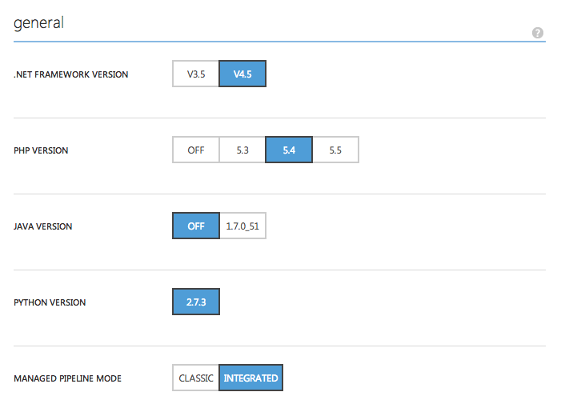
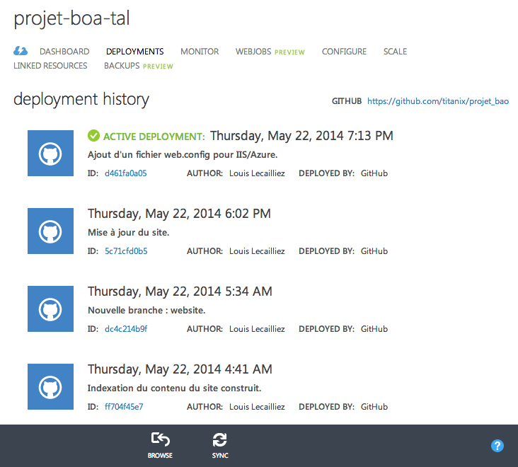
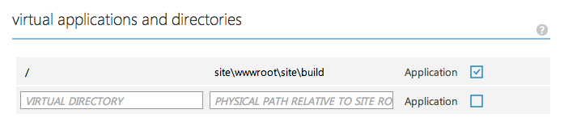
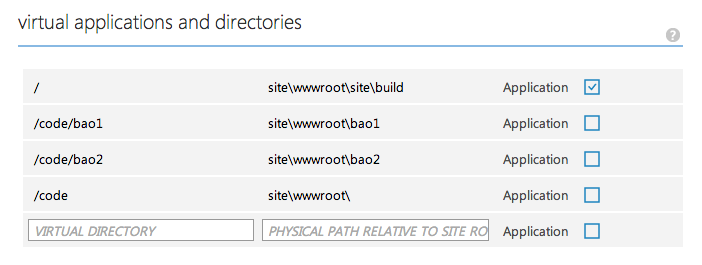

Publication du site
Généralités
Comme projet utilise git et que le site, qui sert de documentation officielle, est également suivit par ce logiciel, il devient possible d'exploiter certaines méthodes de publication que je qualifierai de cool.
Azure websites
Azure (anciennement Windows Azure), est le service cloud de Microsoft. Il propose de nombreux services, souvent assez onéreux et à destination des entreprises, et parmi cette offre pléthorique, se trouve l'hébergement de site web.
Un forfait
Non nous limiterons aux pages statiques que nous avons générées via le petit script
Perl.
Les languages gérés par Azures Websites, vu depuis le panneau de configuration :
Déploiement via un compte git local
Azure met à notre disposition un dépôt git accessible par https sur lequel on peut réaliser des push afin de publier notre site web en une ligne de commande.
La documentation sur le sujet est assez complète et couvre également le déploiement depuis GitHub.
Déploiement via un compte GitHub
Azure Websites a la possibilité de récupérer automatiquement de lui-même les
push réalisés sur la branche d'un projet (public ou privé) hébergé sur GitHub.
C'est la solution retenue pour ce projet.
Je voulais maintenir une branche orpheline gérant uniquement le résultat de la génération du site, mais comme j'ai rencontré plusieurs difficultés, mais je me suis contenté de revenir à une solution simple : ajouter ces fichiers à la branche master et l'utiliser comme branche de publication.
Ce n'est pas forcément ce qu'il y a de plus propre au monde, en particulier je ne voulais pas avoir tous les fichiers de code sur mon serveur Azure. Cependant, comme il s'agit de code Perl il n'y a pas de risque de sécurité, et cela me permet de créer des liens depuis le site directement vers les fichiers de code (après configuration, cf. infra).
Les différents déploiements du site sont listés, avec le message entré lors du commit.

Configuration
Comme le contenu du site se trouve dans le répertoire site/build/ par rapport à la racine du projet, j'ai effectué une modification de configuration afin que le site soit accessible directement depuis le nom de domaine (la page index.html est cherchée et affichée automatique car elle est présente dans la liste des noms de pages par défaut que reconnaît IIS).
De manière générale, IIS a une approche assez défensive quant à l'accès des fichiers. Les fichiers dont l'extension n'a pas été spécifiquement enregistrée pour être servis à l'utilisateur ne lui seront pas envoyé même si le chemin est valide. Des petites bidouilles de path pour accéder au répertoire parent sont stoppées à la racine, etc.
En particulier, l'accès aux fichiers Perl est interdit par défaut. Il faut donc
configurer IIS afin qu'il puisse les renvoyer. Cela se fait au moyen d'un fichier
de configuration XML nommé web.config, dans lequel on va enregistrer l'extension
de fichier. Ce fichier sera placé à la racine du site.
J'ai décidé de renvoyer le contenu des fichiers Perl en tant que texte brut.
<?xml version="1.0" encoding="utf-8"?> <configuration> <system.webServer> <staticContent> <mimeMap fileExtension=".pl" mimeType="text/plain" /> </staticContent> </system.webServer> </configuration>
Chemin de vers le dossier de code
Il existait à la base dans le dossier build du site web un sous-dossier code destiné à contenir les fichiers de code disponibles au téléchargement. Cependant, ces fichiers sont déjà présents sur le serveur à cause de la méthode de déploiement utilisé, et je ne voulais pas les dupliquer.
C'est pourquoi j'ai ajouté des chemins de dossiers virtuels supplémentaires dans la configuration du site web. De cette manière, les chemins sont toujours référencés avec des chemins relatifs tels que code/fichier.pl dans les pages html mais n'ont pas besoin d'être déplacé de leur endroit d'origine, qui n'est pas un dossier enfant du répertoire où se trouvent les pages web.
Notez que le dossier virtuel /code a été ajouté car Azure n'autorise pas la création de dossiers virtuels enfants d'un dossier virtuel inexistant.
Hébergement sur GitHub Pages
GitHub propose lui aussi un service d'hébergement de pages web, à la différence qu'il ne gère que des pages statiques, qui peuvent avoir été rédigés dans certains formats, tel que le markdown.
Pour en profiter, il faut publier ses fichiers dans une branche spéciale, nommée gh-pages. Je n'ai pas testé cette solution, mais voici le lien vers la documentation idoine.